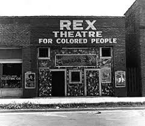

Aversive racism – is a type of unconscious racist attitude and behavior that shows person’s negative views of other racial or ethnic groups through repetitive avoidance of any type of interaction with those racial or ethnic groups. In a certain way, aversive racism can be considered more complex than other types of racist behaviors. The reason for that statement being that – individuals with this sort of unconscious behavior can often profess to believe that all humans are equal in fundamental worth or moral status and that they should be treated as equals, however they often change their attitude when having an interaction with a person from different racial or ethnic group.
Color blindness – it refers to a certain idea – that all people should be treated the same, regardless of their color, only to see each other as human beings. At first glance, the idea seems just, considerate and innocent; however it may be interpreted in a different point of view and that’s why it is considered as a complex idea. The failure to see color obscures racism and therefore perpetuates it. As racism exists in educational systems, health care systems, criminal justice systems etc. – not seeing color would mean not seeing the challenges that the said racial group had to face and how systems work for “people of color”. The racial group that has faced racism tries to fit in what is considered to be a normative standard, and it is that fact that makes it hard for people to “perceive their color”.
Cultural racism – it manifests as a certain belief that there is a culture that is superior in terms of their products, traditions or the language of the mentioned culture. It is mentioned that people who agree on terms of cultural racism, are characterized as often aggressive and show signs of hatred, even fear towards members of another racial or ethnic group that they show through their hostility towards those groups. Some scientists even argue that islamophobia can be considered cultural racism; however it mostly shows hostility towards certain religious beliefs.
Economic racism – it manifests in unconscious racist attitudes and actions towards members of a certain racial or ethnic group that has faced past racism and discrimination, thus affecting the current educational system, health care system, criminal justice system etc. The proof of this is the racial pay gap in the United States (American Asians receive the most income, followed by White Americans, Hispanic Americans, African Americans and lastly Native Americans) – there is a variety of explanations for those differences, such as differences in education etc. Those differences lead to racial inequality, especially considering the consequences of past systems on those racial or ethnic groups.
Institutional racism – it is a type of racist behavior that certain racial or ethnic groups receive from large organizations that have major influence over their daily lives. Those organizations are usually governments, religions, corporations, educational institutions etc. It can lead to discrimination in various systems (heath care, employment, criminal justice, education etc.).
Othering – it is a racist action that results in determining the characteristics of a certain racial or ethnic group and separating them from the people that are considered normative. It mostly refers to generalizing the culture as “different” and thus creating a further gap between those cultures/ groups (per example – West was considered masculine, strong, progressive and amplifying the difference between them results in East being feminine, weak and traditional). Many characteristics are just purely lies made to entertain the imaginer’s perspective and to insinuate the difference between “us” and “them”.
")
Racial discrimination – it is a type of racist demeanor towards certain groups caused only by the color of their skin, their ethnic or racial origin - mostly resulting from some strong beliefs.
Racial segregation - refers to socially constructed daily life “separations” between two groups based purely on their racial origin. It could mean that a person with a different racial background cannot enter certain facilities nor do certain activities in some facilities (these activities include education at a certain school, going to the movies, using a bathroom or a faucet, eating at some restaurants etc.).
Supremacism – it revolves around an idea that European colonist’s actions and ideals were justified. It can be considered a belief in which a certain group of people (determined by their sex, race, ethnicity, social class etc.) are superior to all other groups. Supremacists go as far as to say that conquest and subjugation of Native Americans was justified as they were considered as “merciless Indian savages” – which is written in the United States Declaration of Independence. Supremacists dehumanize certain groups of people in order to justify their prejudice about them.
Symbolic / Modern racism – what can be referred to as “modern racism” is a person saying that they have no prejudice towards any sort of racial or ethnic group but maintaining prejudice attitudes and subtly show them by actions that imply that a certain group’s stereotypes are true and showing the same thinking through different actions when a different ethnic/racial group is being evaluated. There are some people that will show positive reactions towards black people when in public, only to degrade them in private.
Subconscious biases – it is a type of unconscious racist behavior in decision making process – the individuals will claim to have no racist attitudes, but show different traits when it comes to making decisions (even though there’s not enough aspects to fit the description of racism it can have a similar impact).